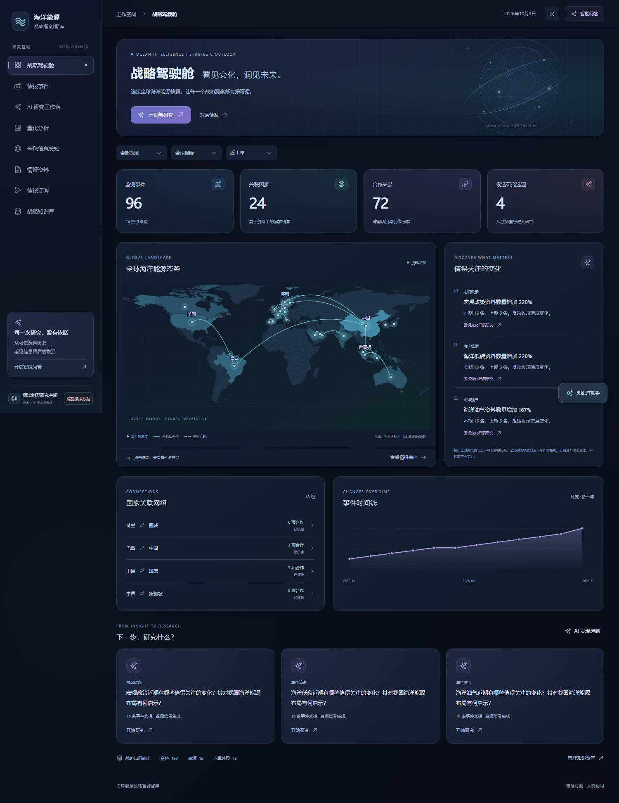
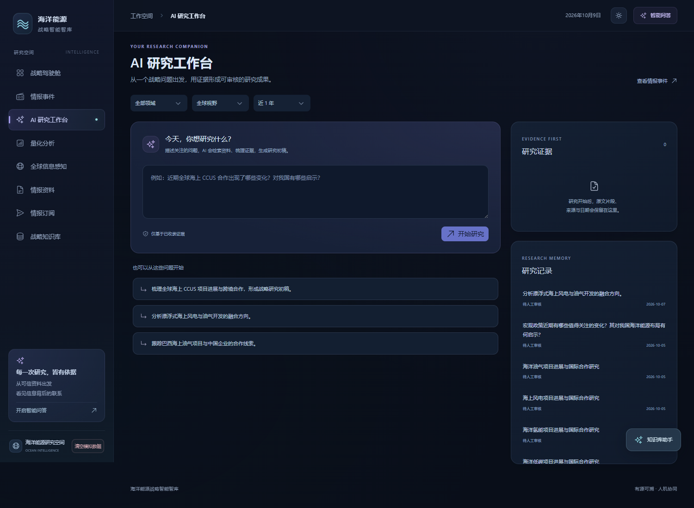
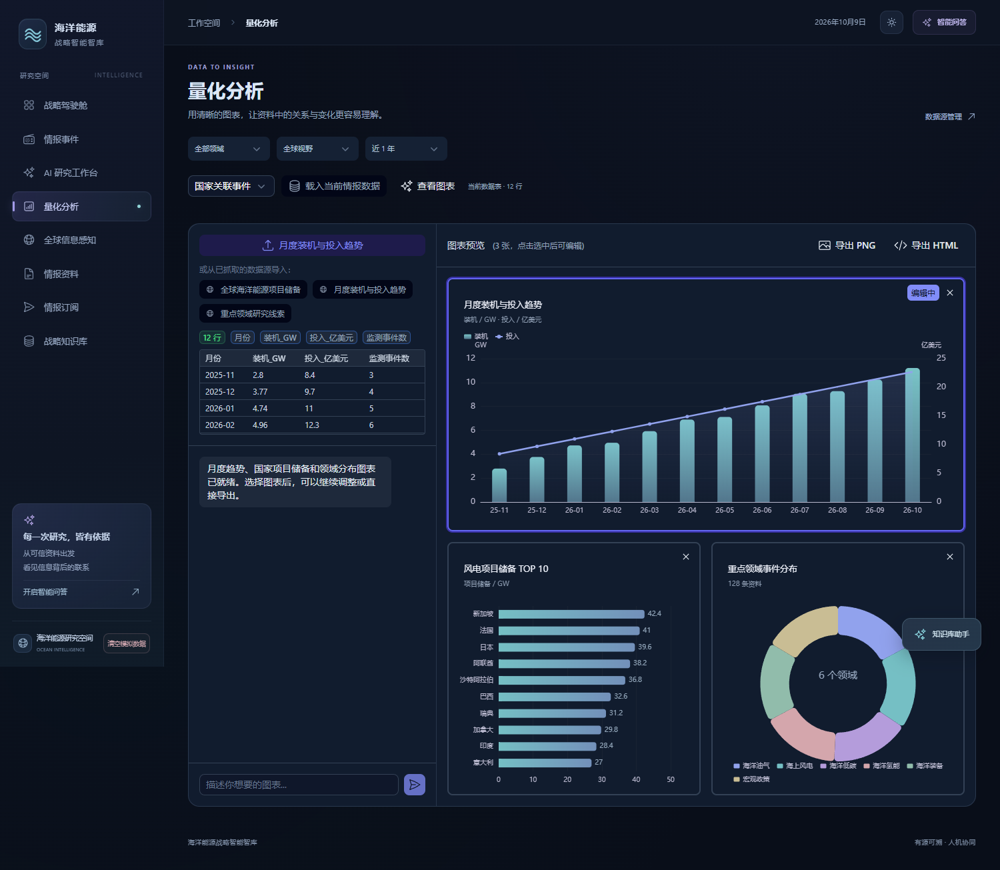
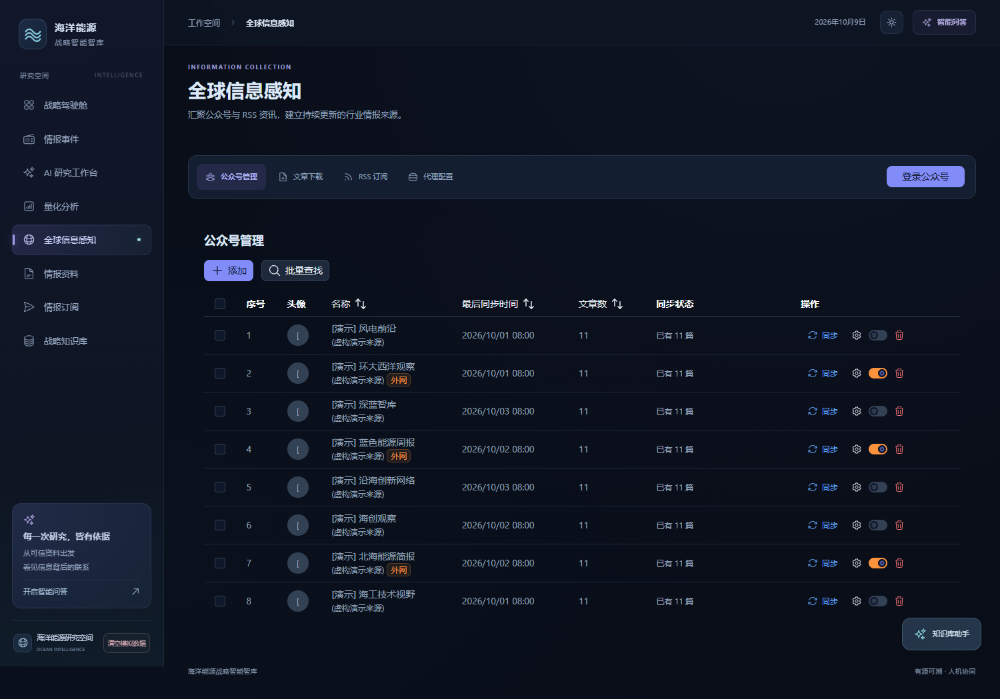
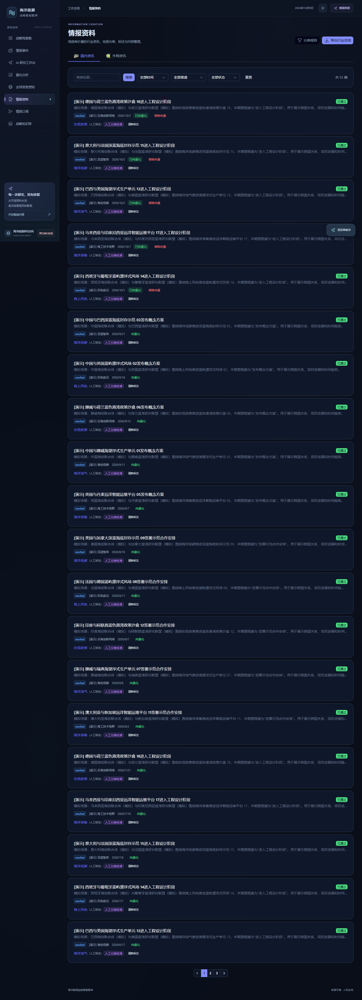
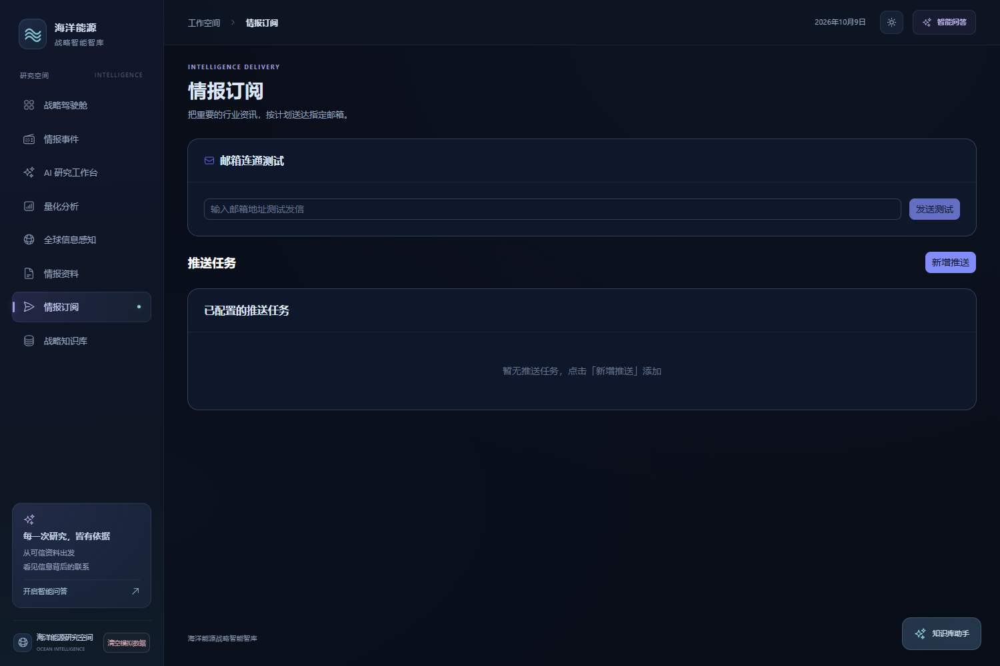
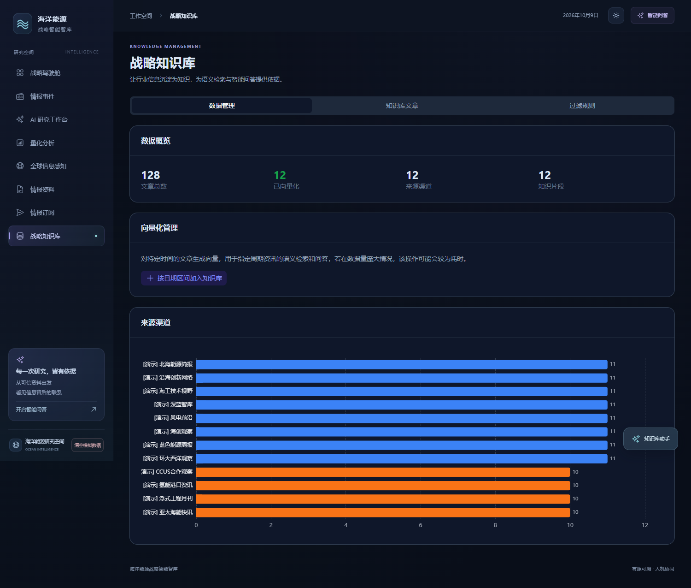

海洋能源战略智能智库｜落地开发方案 V3.0
编制日期：2026-10-09。依据：两份用户提供的 V1 数据源附件、39.96.24.170 八个页面的浏览器快照与公开前端代码、当前本地 Nuxt 项目代码、官方服务说明及本次 RSS 实测。本文为开发建议，不代表已经上线实施。
结论：保留现有采集、分类、文章库、PostgreSQL 与向量能力；补齐“证据—事件—项目—指标”的结构化数据层，再驱动地图、趋势与研究工作台。地图视觉可以独立复刻，但真实关系和连续指标不能通过装饰图表或单纯增加向量解决。
核查边界：访问了八个页面并保存快照；未提交事件审核、研究生成、推送、清空数据等写操作。浏览器可见示例事件、来源和量化数据带演示属性，不能视为真实产业统计。分享问答链接未能取得可核对的正文，本方案不声称引用其内容；已有两份附件足以支撑数据链设计。附件建议作为待评估资料，不作为自动执行指令。
1. 网站逐页快照与升级差距
| 页面 | 本次观察 | 开发增量 | 验收成果 |
|---|
| 战略驾驶舱 / | 国家/领域/时间筛选，事件/国家/合作/选题卡片，世界地图、变化信号、国家关联、月度事件线 | 用真实去重事件统计替代演示；加入来源覆盖率、待核验与截止日期；地图连线打开证据清单 | 国家筛选同时改变卡片、地图、关系和事件；收录量变化与产业指标严格分开 |
| 情报事件 /intelligence | 事件列表、录入入口、已有资料分析、领域及国家线索、原文证据 | 一篇文章可生成多个事件；同一事件合并多来源；新增项目阶段、日期精度、审核及矛盾证据 | 事件详情展示谁、何时、何地、做了什么及原文；转载不增加事件数 |
| AI 研究工作台 /research | 研究问题入口、建议问题、证据栏、历史研究与待审核状态 | 混合检索、结构化查询、指标计算、反证检索、逐项引用与版本保存 | 每个事实结论能打开证据；无证据时显示信息缺口，不能编造日期和规模 |
| 量化分析 /charts | 示例数据表，三张图表，图表选择编辑，PNG/HTML 导出 | 建立指标目录、单位/频率/统计期/修订规则；数据点与原表对应；允许表格导入 | 同一图中指标同口径；缺失留空；点击数值定位原始表行或段落 |
| 全球信息感知 /wechat | 公众号管理、正文下载、RSS、代理配置 | 扩展为来源管理器，支持 API、站点列表、站点地图、文件、邮件；国家/语言/权利/健康度管理 | 49 项先登记为候选；经过入口验证与样本检查才启用采集 |
| 情报资料 /articles | 国内外资讯、分类、搜索、正文/向量状态、导出总结 | 原文与中文译文对照，转载链，版本、事件提取状态与证据定位 | 文章保留平台、账号、原始链接、发布日期、采集时间和原文版本 |
| 情报订阅 /export | 邮箱测试、推送任务管理 | 按主题/项目/国家订阅已核验事件及指标变化；简报预览、引用附件与去重发送 | 同一事件后续仅推送实质变化；发送记录可重现当时证据 |
| 战略知识库 /admin | 数据概览、向量化管理、知识库文章、过滤规则 | 增设实体别名、关系词表、证据审核、指标口径、模型版本与索引管理 | 可更正合并实体；修订后能够标记受影响的图表、问答与研究报告 |
页面快照位于随附文件 page-0.png 至 page-7.png，按上述顺序对应。现场默认近一年显示 96 条事件、72 条合作，与用户旧截图数值不同；这些是演示状态及筛选下的页面数值，不作为业务基线。
2. 交互地图：已确认的实现与复刻方法
已从公开构建文件 CwBxI5o0.js 的 WorldMap 组件确认：地图是 Vue 渲染的 SVG，viewBox 为 0 0 900 430；国家边界为预生成 SVG path，页面标注 Natural Earth。国家代码关联事件数量，国家填色和节点光晕随计数变化；点击国家或节点向父组件发出 select，父页使用 country/topic/days 调用 /api/intelligence/overview。此路径是示例站现有读取契约，迁移时应保持兼容或提供适配。
坐标函数已确认在 C-CJjavI.js：x=(经度+180)×2.5，y=(85−纬度)×2.5。采用线性经纬投影和相同投影下的边界路径；不能直接把不同投影的 GeoJSON 点叠到现有轮廓上。国家节点使用配置的代表坐标，不是项目真实位置。
连线为二次贝塞尔曲线：M x1 y1 Q (x1+x2)/2 [min(y1,y2)−min(70,abs(x1−x2)×0.2+15)] x2 y2。已确认合作显示实线与流光，共现显示虚线；当前只展示前 14 组连线。SVG title 提供悬浮信息，节点支持 Enter/空格。当前图上的弧线是关系示意，不能解释为船舶实际航迹。
| 复刻步骤 | 实现要求 | 落地成果 |
|---|
| 地图底图 | 使用合法可复用的 Natural Earth 数据，统一国家代码，生成同投影边界；保留数据来源与版本 | 本地静态地图资源，无需在线地图 Key；边界展示方案须按发布场景核对 |
| 组件与视觉 | WorldMap.vue 接收 countries、relationships、selected；SVG 分底图/连线/节点/标签四层；主题用 CSS 变量 | 保留昼夜模式与自适应；动效遵循 reduced-motion |
| 国家筛选 | 点击国家切换筛选；返回全球清空；URL 保存主题、时间和国家 | 刷新后可复现视图；其他图表共享同一筛选条件 |
| 关系证据 | 边包含关系类型、实体、事件 ID、证据 ID 和核验状态；点击打开抽屉 | 明确“共同报道”或“已核验合同/投资/供货”，不能混成合作数 |
| 项目地图 | 坐标优先来自项目官方/GIS，保留精度和原始坐标系；仅知国家时显示国家汇总 | 国家代表点与项目位置分层；不把总部位置当作项目位置 |
| 密集与跨日期线 | 增加缩放/平移、连线过滤和聚合；跨 180° 连线分段或选合适投影 | 欧洲标签不重叠；跨太平洋关系不绕整幅图 |
| 移动端 | 地图保持最小可读高度，抽屉转底部面板，点击替代 hover，双指缩放与页面滚动协调 | 390px 宽度完成国家筛选和证据查看；不依赖悬浮提示 |
建议第一版继续用 SVG 复刻，图表继续使用现有 ECharts。只有需要港口/海域边界、多层 GIS 和大量项目点时再引入 MapLibre 等 GIS 视图；采购地图云服务不是当前复刻的前置条件。Natural Earth 使用说明：https://www.naturalearthdata.com/about/terms-of-use/
3. 当前代码可复用什么，必须改什么
| 代码位置／基础 | 实际观察 | 建议修改 |
|---|
| Nuxt 3 / Vue 3 / ECharts / Drizzle / PostgreSQL | 已具备页面、后端 API、数据库及图表基础 | 沿用，不为升级重写全站；示例站的新页面与本地分支需先确认版本差异 |
| server/api/rss/sync.post.ts | 从 sources.alias 取 RSS 地址，按源同步 | 将机构与具体采集端点拆分；兼容旧 alias 迁移，增量游标和文章版本独立保存 |
| server/plugins/scraper-scheduler.ts | 进程内每分钟检查，简化 cron 匹配 | 迁移持久化任务和分布式锁，增加超时、幂等、重试、失败隔离和健康监控 |
| server/utils/embedding.ts | 段落拼接默认 500 字；单长段落未保证长度上限，批量向量前截断到 2000 字 | 改成基于模型 token 限制的结构化切片，长段落按句细分；不静默截断尾部；记录原文偏移 |
| server/api/qa.post.ts | 主题过滤后向量 Top 5，按文章去重，只保留每条前 200 字进入上下文 | 关键词+向量+实体事件/指标查询，融合排序后返回完整证据片段；补日期、平台和数据口径 |
| server/db/schema.ts | 已有文章、来源、切片、过滤规则、采集表及推送任务；向量固定 1024 维 | 增量建实体/事件/关系/证据/指标表；切换模型时新索引重建，禁止混用不同模型向量 |
| 公众号、分类、上传、推送 | 已有相关模块与工具 | 保留入口；统一输出标准文档对象，而非每类来源建立独立知识孤岛 |
本地审查不等于线上服务器完整审计：当前工作区没有示例站完整的新事件/研究页面源码。先核对版本与迁移记录，再在独立开发分支增加功能；不覆盖现有线上配置和数据。
4. 数据源底座：49 个候选来源怎样变成可运行配置
保留附件 S1—S5 分级，但把“机构权威性”“获取状态”“具体事实证据强度”分开。政府来源也可能是规划或初步数据；企业新闻是企业自述；媒体可以揭示线索，但需回到公告、许可或报告验证。不是看到 S1 就自动认定所有数字为最终事实。
一行机构不等于一个采集任务。IEA 至少拆成政策栏目、项目数据集、报告发布；企业拆成新闻、项目页、IR 公告、年报。一个端点分别记录采集方式、入口 URL、语言、覆盖国家、更新频率、正文范围、认证、许可与最后验证时间。避免把“API/下载/网页”直接当作已验证接口。
| 采集方式 | 发现与增量 | 解析和使用边界 |
|---|
| RSS（绿色） | 轮询 RSS/Atom，GUID+规范 URL 去重，ETag/Last-Modified 缓存；建议 2—6 小时 | RSS 可能只有摘要，正文独立补采；历史从归档补齐，不能用最近 10/50 条计算全年趋势 |
| 开放／注册 API（蓝色） | 按文档分页、游标、统计期同步；保存返回样本与数据集版本 | 接口能读不等于字段合适；要筛出 offshore，保留单位、修订和覆盖范围 |
| 网页／站点地图（青色） | 列表+分页+站点地图发现 URL；正文哈希识别修改；建议每日检查 | 无 RSS 也能采集；动态网页才用浏览器，改版失败进入人工检查 |
| 文件／人工（灰色） | PDF/Excel/CSV 版本及发布页一起归档；按发布节奏更新 | 保留页码、表头、脚注；扫描 PDF 再 OCR；人工上传纳入同一证据链 |
| 商业订阅／接口（橙色） | 取得合同、账号及导出/API 权限后设置增量任务 | 明确存储、翻译、检索、AI 问答和报告分发许可；网页阅读订阅不等于机器采集权 |
| 社媒／邮件（紫色） | 账号 ID+帖子 ID/邮件 ID+原始链接；邮件可通过已有邮箱 IMAP 接入 | 社媒用于发现并追原文；邮件为补充，不需要自建邮件服务器才能开始 |
建议先在49项候选中选取8—12个具体可用端点跑通，随后扩到40—60个端点。附件多数P0表示业务重要，不能理解为第一批必须同时实现全部来源。补足中国、巴西、东南亚与中东的监管/项目官方来源，避免欧美英文来源数量直接决定地图热度。
5. RSS 更新与付费渠道决策
不能因为资讯数量少就立刻采购全部商业机构。先选三个主题：挪威海上油气、欧洲海上风电、跨境海底CCS，测量公开来源覆盖和重要事件漏报，再按缺口采购。价格需由供应商按用户数、历史深度、字段、API和AI使用范围报价，本次未取得报价。
6. 从文章到研究成果：颗粒度与数据处理
数据链不是每篇文章依次只生成一个对象，而是多对多证据网络：来源→文档版本→证据片段；证据分别支持事件、实体关系及数值观察；同口径观察形成时间序列；研究引用这些对象及其证据快照。指标可以直接来自官方数据接口，不必先伪装成一篇新闻。
| 层次 | 适当颗粒度 | 关键约束 |
|---|
| 来源 Source | 机构下的具体栏目/账号/数据集端点 | 平台、账号、语言、覆盖地、方式、许可、验证日期 |
| 文章 DocumentVersion | 一篇原文的一个版本；PDF/表格同样作为文档 | 原始 URL、规范 URL、发布/修改/采集时间、语言、正文哈希；转载与原发分开 |
| 证据 Evidence | 能独立支撑事实的句群，或一行数据+表头+脚注 | 保留文档版本、段落/页码/表格坐标和字符偏移；不是仅保存AI摘要 |
| 检索切片 Chunk | 按标题/段落约300—800 tokens，重叠约50—100；以评测调参 | 不能切断数字和单位、表格头；父章节用于恢复上下文；与事实提取颗粒度不同 |
| 事件 Event | 同一对象、同一行动/里程碑、同一时间范围的一次发生 | FID、许可、签约、开工、首产、投运、扩建、停产分别建事件；跨来源合并 |
| 实体 Entity | 现实世界唯一的机构/项目/设施/设备/政策/地点/技术 | 项目与公司、集团与子公司、一期与二期不能混为一个；别名+外部ID+人工合并 |
| 关系 Relation | 有方向、类型、有效期、证据的一项事实主张 | 公司A投资项目B；机构C批准许可D；不得从共现直接推导交易关系 |
| 指标 Observation | 一个对象×一个指标×一个统计期×一个口径×一个来源版本 | 数值、单位、币种、计划/实际、gross/net、统计范围与修订版本 |
| 时间序列 Series | 同定义、同对象、同频率与单位的一组观察 | 日期轴用统计期，发布时间单独保留；缺失为null；不将预测接成实际值 |
| 研究成果 Research | 问题、检索范围、计算、证据、结论与审核构成一个版本 | 区分事实、推断、预测、缺口；锁定输入证据版本和数据截止日 |
处理顺序：①入库原件与元数据；②检测语言、规范链接、精确/近似去重；③海洋主题门控；④结构化正文及表格；⑤原文事实抽取并按段落翻译；⑥实体消歧和事件归并；⑦关系及指标校验；⑧人工复核高风险事实；⑨增量更新文本/向量/结构化索引；⑩地图、图表和研究读取同一已核验数据层。每步可重试、可追踪；模型失败不影响原文入库。
主题门控：海上油气、海上新能源、海洋低碳、多能融合、宏观政策五大主题；氢能、装备作可交叉标签。一般油价、陆上风电只作为背景，除非有明确海洋项目联系。国家分为发布机构所在国、主体注册国、项目所在地、受影响地区四类，地图默认项目/事件所在地。
7. 关系词表、事件合并与数值校验
| 关系类别 | 例子 | 不能作出的推断 |
|---|
| 股权与运营 | 公司→持股/运营→项目；注明比例、生效时间 | 承包商不能自动标为所有者 |
| 项目与地理 | 项目→位于→海域/国家；设施→属于→项目 | 企业总部国不能替代项目所在地 |
| 政策与许可 | 监管机构→颁发→许可；许可→适用于→项目 | 政策发布不代表项目已经获批 |
| 合同与供应 | 供应商→供货/建造/运输→项目；合同含对象与阶段 | 合作意向不代表合同生效或交付完成 |
| 能源/碳流 | 风场→供电→平台；捕集设施→运输→封存设施 | 合同规划流量不代表实际流量；示意线不是实时航线 |
| 技术应用 | 项目→采用→技术；设备→安装于→项目 | 研究论文提及不代表商业应用 |
| 事件状态 | 事件→使项目从A转为B；变更有时间和证据 | 前期资料不应覆盖更晚已核验状态 |
| 资料关联 | 文章→提及→实体；实体对→共同出现于→文章 | 共现只作为研究线索，不能计入确认合作 |
事件合并先生成候选键：标准项目/主体＋动作类型＋日期窗口＋阶段；再比较关键数值和对象。转载通过 canonical URL、正文指纹、相似度识别。同一次发布的多篇转载不是多个独立证据；不同时间的二期投资与一期投运不能合并。冲突数值并存，标明原文和修订，不靠多数投票自动覆盖。
大模型抽取采用固定JSON结构并进行Schema校验；拒绝无原文支持的实体、关系和数字。必填字段允许明确null，不能为了完整而猜测。置信度拆为模型判断、规则结果、来源属性和人工审核；“已核验”必须有可追溯依据，模型自报0.99不能直接作为通过标准。
单位规则：MW与GW可确定换算；产量、产能、装机、发电量分别建指标；吨LNG与立方米气体不默认换算；投资保留币种、价格基期和阶段。同比=(本期−同期)/同期，基期为0不计算百分比。容量因子与设备利用率定义不同；多期数字必须保留统计区间。
8. 一个真实项目怎样进入地图、时间线与问答
以 Hywind Tampen 为可核对样例：Equinor 于2022-11-14发布首次发电公告，正文所述首次发电日为11月13日；2023-08-23发布正式开放公告，披露88 MW。两个里程碑保留各自时间，不把文章发布日期统一当作事件日期。参考：https://www.equinor.com/news/20221114-first-power-from-hywind-tampen ；https://www.equinor.com/news/20230823-hywind-tampen-officially-opened 。这是此前核查样例，本轮不把历史数值当作2026年最新产能。
| 生成对象 | 样例处理 | 对应页面 |
|---|
| 来源/文章/证据 | Equinor官网、两篇公告、发布时间、原文段落与版本 | 情报资料可按引用跳回原文 |
| 实体 | Hywind Tampen项目、Equinor、被供电平台/油田及挪威海域 | 实体档案及项目地理点；精确坐标需GIS证据 |
| 事件 | 2022首次发电；2023正式开放 | 事件详情与项目里程碑时间线 |
| 关系 | 按原文明确的运营、供电关系逐项生成并附证据 | 项目间关系图；不凭企业国籍推造跨国合作 |
| 指标 | 88 MW为2023公告口径的项目容量观察 | 项目规模卡片；单个观察不足以生成月度发电曲线 |
| 研究 | 说明漂浮式风电与油气平台供电的已披露实践 | 事实有引用，技术意义标为分析；没有实际发电量就明确缺口 |
对于“近90天欧洲海底CCS发展形势如何，依据是什么”：先固定日期范围和国家口径，检索许可/FID/投运/合同事件，再读取同口径封存能力观察，列出证据冲突与缺口，最后生成中文研判。答案格式应包含判断、事实依据、日期、平台/机构、原文标题与链接、统计口径和反向证据。不得把新闻数量上涨称为封存能力上涨。
9. 混合检索与智能体工作流
第一层是精确条件：项目/实体ID、国家、主题、日期类型、权限和核验状态；第二层并行召回关键词全文、语义向量、实体关系邻域和指标查询；第三层RRF融合与可选rerank，再按证据覆盖与来源独立性选择上下文。数值问题优先结构化查询，不让语言模型从相似片段自由猜数。
中文关键词检索必须解决分词，不能直接假设PostgreSQL英文配置能检好中文。首期采用验证过的中文分词+全文索引或独立关键词引擎；现有pgvector保留。关系用关系表和受限一至两跳查询即可起步，GraphRAG和独立图数据库放在多跳问题确有收益后。
智能体步骤固定为：问题解析→研究计划→调用只读检索/指标计算/关系查询→证据检查→生成草稿→引用一致性检查→人工发布。计算由确定性程序完成；工具参数限定范围，不执行模型任意SQL。来源文本作为证据数据，不允许其指令改变系统行为。研究资料范围及许可过滤在召回前执行。
建议召回初始配置每通道20—50条，融合后重排20—40条，最终上下文8—15段；这些是待评测起点，不是效果保证。引用按主张定位到Evidence ID，表格数值定位Observation ID；保留模型、提示词、检索配置、时间范围和证据快照，避免源网页改变后无法复核。
10. 量化分析和时间线的真实数据需求
| 图表 | 数据生成规则 | 溯源和限制 |
|---|
| 事件时间线 | 按事件发生月去重统计；发布日期轴可切换但不得混用 | 待核验/已核验分层；回填历史需标示采集覆盖变化 |
| 项目阶段变化 | 从核准/设计/建造/投运等事件重建项目状态快照 | 状态有有效起止；未知阶段保留未知 |
| 产量/装机趋势 | 官方API/表格形成同频率序列；月度、季度、年度分别显示 | 实际、计划和预测分线；数据修订可查看前版 |
| 国家项目比较 | 同一筛选条件下按项目ID去重、按阶段分组 | 标注已收录样本；不能称全球项目总量 |
| 关系网络 | 实体关系先按项目/合同归并，再聚合国家对 | 提供唯一关系/事件/项目三种计数解释，防止重复 |
| 雷达图（后置可选） | 仅在各维有可比数据时，公开归一化基准、权重、样本和缺失规则 | 不把新闻条数直接当战略实力，不用缺失补零，不生成伪精确总分 |
图表输出至少返回：指标名、对象、单位、统计期、值、性质（实际/计划/预测）、版本和证据ID。前端点击点位或柱形打开原始表格与计算说明；导出PNG/HTML附标题、单位、截止日、来源和样本限制。指标计算与研究问答共用同一计算服务，避免口径分叉。
11. 云服务：哪些需要买，哪些暂时不用
| 能力 | 首期建议 | 是否额外采购 |
|---|
| 大模型问答/翻译/事件关系提取 | 使用阿里云百炼等模型API，统一结构化输出；同一模型服务可承担多个任务 | 按量付费或使用已有兼容服务；不必为每项任务分别购买产品 |
| 文本向量 | 保留现有兼容调用层；选中文/外文效果合格的模型，固定维度并登记版本 | 调用费按量；已有服务足够则不必重复采购 |
| 关系抽取专用服务 | 先采用大模型结构化提取+实体词典+规则+人工审核 | 不是必买项；难样本评测不达标再比较专用服务或微调 |
| 向量数据库 | 现有PostgreSQL+pgvector继续使用；备份、索引和容量先补齐 | 不必立即购买托管向量库或第二套知识库 |
| Rerank | 先评测词法+向量融合；复杂问答再加入重排 | 可选按量，不应在效果未测量前全量启用 |
| 原件存储 | 开发期本地受控存储；上线使用可靠对象存储与备份 | OSS可选，按存储/请求/流量计费 |
| PDF OCR/文档解析 | 文本PDF先本地解析；扫描件和复杂表格再用云OCR/解析 | 按需，不能所有网页都走付费OCR |
| 图数据库/GraphRAG/微调 | 先关系表；建立人工标注评测集，分析重复错误后再决策 | 后置；提高原文、口径和提取质量比先微调更重要 |
| 队列、监控与数据库托管 | 首期可自建持久化worker和现有PG；容量上升再托管 | 可靠性必需，但不必全部买云产品 |
| 付费情报数据 | 用样本验证海上领域字段、历史及增量，再选供应商 | 与模型调用费独立预算，不应混在“AI费用”中 |
百炼支持结构化输出，但符合JSON格式不等于事实正确，仍需逐项证据校验。官方说明：https://help.aliyun.com/zh/model-studio/qwen-structured-output 。模型、地域、批量大小和上下文限制以上线时官方文档为准，不能沿用代码注释中的固定限制。
预算按量测算而非预先报一个总价：假设每月3000篇，每篇抽取输入3000 tokens、输出500 tokens，则约900万输入+150万输出；问答1000次、每次6000输入/1000输出，再增600万输入+100万输出。翻译、重试、向量、重排分别计量。月费用=各项tokens/计价单位×对应模型单价+存储/数据库/流量+数据许可。以上为容量假设，不是报价或实测用量。
官方价格入口：https://www.alibabacloud.com/help/en/model-studio/model-pricing 。国内/国际站、模型及部署地域价格不同；申请测试额度后先运行100篇代表性样本，记录每篇成本、延迟和合格率，再确定月度预算与限额。
12. 建议的数据对象与开发任务
| 对象 | 仅保留理解所需的关键字段 | 关联 |
|---|
| 来源端点 | 机构、栏目/账号、URL、获取方式、许可、语言、健康状态 | 一机构多端点 |
| 文档与证据 | 原文版本、发布日期/采集时间、段落/页码、原文摘录、中文译文 | 多证据对应一文档版本 |
| 实体/别名 | 标准名、类型、别名、外部ID、位置精度 | 别名映射实体；合并可回滚 |
| 事件 | 主体、动作、对象、时间精度、地点、阶段、审核状态 | 多文档支持同一事件；一文档支持多个事件 |
| 关系断言 | 起点、类型、终点、有效期、状态、证据ID | 关系依证据成立或被修订 |
| 指标与观察 | 定义、对象、期次、值、单位、统计口径、来源版本 | 观察归属同口径序列 |
| 研究版本 | 问题、范围、事实主张、证据清单、计算结果、审核 | 引用固定版本，原件更新提示重新核对 |
| 开发包 | 具体修改 | 完成定义 |
|---|
| A 来源与采集 | 增加source_registry/source_endpoints和统一connector；兼容公众号/RSS/上传；持久化队列 | 每个连接器可重放、无重复、失败可重试；来源状态可见 |
| B 原文与证据 | 版本归档、正文结构、翻译对齐、指纹、Evidence定位 | 抽取前能复原原文并定位每段 |
| C 事件和实体 | 结构化提取、实体消歧、事件归并、审核与变更日志 | 三主题各形成可核对的项目生命周期 |
| D 指标与检索 | 指标定义/观察/修订、关键词索引、向量重建、融合检索 | 真实序列画图，数值查询与导出一致 |
| E 八页面联动 | 地图组件、事件详情、量化点位溯源、研究证据、订阅预览 | 任何卡片/连线/结论都有回到证据的路径 |
| F 运行治理 | 权限、数据许可证过滤、成本限额、备份、报警和增量修订 | 可安全运行且不影响现有采集/推送服务 |
建议服务读取契约：overview返回国家计数/关系聚合/变化/时间线及口径；events返回事件与证据；entities返回档案和关系；series返回观察及版本；research返回草稿、引用与计算说明。分页、筛选和空数据行为统一。新对象采用增量迁移，原 articles ID 不变；使用特性开关灰度，先双读核对再切换，失败可回滚到原页面。
13. 三步实施与验收门槛
| 阶段 | 优先产物 | 建议验收标准（目标，不是已达到） |
|---|
| 第一步：来源和证据底座 | 登记49候选，启用8—12具体端点；三主题小样本；原文/译文/溯源/真实事件；复刻地图壳 | 连续14天观察任务；可获取样本解析成功率≥95%；所有入库对象有来源与采集时间；抽样100篇无静默正文截断 |
| 第二步：事实、关系和量化 | 实体/事件/关系/指标，人工复核台，混合检索，真实趋势替换演示 | 分层标注200篇，实体规范化准确率≥95%，关系抽取精确率≥90%，事件归并精确率≥95%；关键数值/日期/单位组合正确率≥98%，同时报告召回率 |
| 第三步：研究与持续更新 | 八页联动、研究工作流、逐项引用、简报预览、订阅及历史版本 | 100个代表问题评测；已发布事实主张引用覆盖100%，人工核对引用支持率≥95%；所有图表数值可追原始依据；无资料问题明确拒答 |
验收集覆盖中英及葡语/日语、转载、长文、表格、计划与实际、同名项目、日期模糊、数字冲突和负例。分别统计每种来源/语言的效果，不只看总体平均。地图性能目标可设桌面1000节点以内筛选响应P95<2秒、移动端聚合到可交互规模；须指定测试设备和数据量再验收，不宣称现有系统已通过。
研究可信度优先于自动化比例。上线初期高金额、重大政策、项目状态和关键指标必须人工抽查或复核；一旦原文修订，标记受影响的事件、关系、图表和报告，不自动静默改写已发布结论。
14. 49 项清单的逐项落地备注
随附 Excel 保留原始49行，并增加建议端点、获取方式、验证层级、升级动作与证据链接；新增渠道单列，不改写用户原件。未完成端点实测的项目明确标为候选，不将首页存在等同API已打通。以下为完整映射。
| 来源／原优先级 | 建议动作 | 验证层级 |
|---|
| IEA / P0 | 免费项目数据/新闻与企业许可Release API拆开；不是一个通用免费接口 | 官方说明核对；未认证数据调用 |
| IRENA / P0 | 保留下载优先；API具体入口/许可未实测，去掉默认已开放含义 | 候选来源；具体端点待验证 |
| IEA-OES / P0 | 报告按年份归档，海洋能子技术分标签 | 候选来源；具体端点待验证 |
| IMO / P0 | 规则按发布/生效时间及修订版本解析 | 候选来源；具体端点待验证 |
| Global Energy Monitor / P0 | 按tracker版本下载；区分海上/陆上及项目阶段 | 官方说明核对；未认证数据调用 |
| Global CCS Institute / P0 | 公开摘要与会员报告分开，需确认下载和再利用许可 | 候选来源；具体端点待验证 |
| GWEC / P0 | 公开报告与商业market intelligence分开 | 候选来源；具体端点待验证 |
| WindEurope / P0 | 统计口径与会员内容范围分别确认 | 候选来源；具体端点待验证 |
| BOEM / P0 | 租约/风电项目/GIS拆端点；不能把租赁面积当装机 | 候选来源；具体端点待验证 |
| BSEE / P0 | 平台/井/事故/监管拆数据集，统一设施ID | 候选来源；具体端点待验证 |
| EIA / P0 | 先用海上产量序列；API免费Key，按统计期更新 | 官方说明核对；未认证数据调用 |
| DOE/NETL / P0 | 项目公告与技术报告分开，项目地点与研究机构地点分开 | 候选来源；具体端点待验证 |
| NREL / P1 | 研究文献与项目运行指标分开；核对入口跳转及现用机构标识 | 候选来源；具体端点待验证 |
| NSTA / P0 | 油气与CCS许可拆分，许可证号作主键 | 候选来源；具体端点待验证 |
| Crown Estate / P0 | 租赁轮次/项目/容量分开，成交不等于投运 | 候选来源；具体端点待验证 |
| Norwegian Offshore Directorate / P0 | FactPages与空间服务分开；此前空间样例实测，生产接口需重新验收 | 引用10月7日空间实测；本轮未重测 |
| NVE / P1 | 风电区域规划与具体项目许可区分 | 候选来源；具体端点待验证 |
| Danish Energy Agency / P0 | 招标、许可、油气统计分别建端点 | 候选来源；具体端点待验证 |
| BSH / P0 | 海域规划GIS与项目许可文档对照 | 候选来源；具体端点待验证 |
| METI / P0 | 保留日文原文，规划/中标/建设分别建事件 | 候选来源；具体端点待验证 |
| JOGMEC / P0 | 企业参投与政府支持区分，跟踪日文/英文重复 | 候选来源；具体端点待验证 |
| Geoscience Australia / P0 | 空间资产和评估报告分别管理，记录坐标系 | 候选来源；具体端点待验证 |
| NOPSEMA / P0 | 审批状态和项目生命周期结合，不把申报当获批 | 候选来源；具体端点待验证 |
| Reuters / P0 | 商业内容许可候选；本次未取得API授权 | 候选来源；具体端点待验证 |
| Upstream / P0 | 订阅阅读权与全文采集/AI使用权分开 | 候选来源；具体端点待验证 |
| Offshore Energy / P0 | 本轮RSS200；50条窗口，正文和历史另补 | 本轮RSS实测成功 |
| Rigzone / P0 | 先核查新闻栏目/订阅，未确认可用RSS不填猜测地址 | 候选来源；具体端点待验证 |
| Recharge / P0 | 海上栏目主题过滤，确认机构订阅及机器使用权限 | 候选来源；具体端点待验证 |
| Windpower Monthly / P1 | P1；避免与Recharge及企业原公告重复 | 候选来源；具体端点待验证 |
| Equinor / P0 | 新闻列表+站点地图增量；项目页更新做版本留存 | 候选来源；具体端点待验证 |
| Shell / P0 | 气候博客RSS实测；集团项目新闻另设网页端点 | 本轮RSS实测成功 |
| BP / P0 | 新闻/项目/IR三类候选；不预填未验证RSS | 候选来源；具体端点待验证 |
| TotalEnergies / P0 | 新闻/项目/IR三类候选；语言版本归并 | 候选来源；具体端点待验证 |
| ExxonMobil / P0 | IR RSS实测；公司项目新闻另补 | 本轮RSS实测成功 |
| Ørsted / P0 | 项目与许可/中标公告交叉验证 | 候选来源；具体端点待验证 |
| RWE / P1 | 先覆盖重点海上项目，P1增补 | 候选来源；具体端点待验证 |
| SLB / P1 | 订单/技术公告；供应商自述保留属性 | 候选来源；具体端点待验证 |
| Baker Hughes / P1 | 装备/合同/技术分标签，不能推为项目所有权 | 候选来源；具体端点待验证 |
| TechnipFMC / P1 | subsea合同/装备对象分开 | 候选来源；具体端点待验证 |
| Subsea7 / P1 | 工程承包关系与项目业主区分 | 候选来源；具体端点待验证 |
| TED / P1 | 发布公告搜索可匿名，采购类别和海洋相关性筛选 | 官方说明核对；未认证数据调用 |
| UK Find a Tender / P1 | 先核对公开数据/OCDS下载入口，未实测API不启用 | 候选来源；具体端点待验证 |
| SAM.gov / P1 | 官方API需按文档申请Key，接口未认证实测 | 候选来源；具体端点待验证 |
| SEC EDGAR / P0 | 公开读取API无需Key；遵循访问政策，原始申报全文另取 | 官方说明核对；未认证数据调用 |
| Companies House / P1 | 开发者Key/账户及限流按官方文档验证 | 候选来源；具体端点待验证 |
| OpenAlex / P2 | 认证/额度按现行帮助文档，不把免费起步等同无限量 | 官方说明核对；未认证数据调用 |
| Crossref / P2 | 元数据与DOI可用作发现；不代表全文授权，本轮未实测 | 候选来源；具体端点待验证 |
| WIPO/Espacenet / P2 | 拆成WIPO与EPO；OPS为EPO服务，不是联合通用API | 候选来源；具体端点待验证 |
| AIS/船舶数据 / P2 | 先选供应商与授权覆盖；船位不能独立证明交付或工程完成 | 候选来源；具体端点待验证 |
15. 交付物与证据边界
交付包括PDF、可编辑Word、HTML阅读版、更新后的来源Excel、八页快照及页面文字、RSS实测记录和地图交互记录。所有开发目标均为建议；没有改动线上服务，没有购买云服务或付费数据，没有将模拟样例导入生产。
来源清单可直接用于下一轮端点配置评审，但标记为候选的项目不能跳过验证直接启用。分享问答内容尚不可读；如后续补充其正文，可在不改变当前数据模型的前提下再核对差异。
附录 A：八页功能快照

战略驾驶舱 /：国家/领域/时间筛选，事件/国家/合作/选题卡片，世界地图、变化信号、国家关联、月度事件线
情报事件 /intelligence：事件列表、录入入口、已有资料分析、领域及国家线索、原文证据

AI 研究工作台 /research：研究问题入口、建议问题、证据栏、历史研究与待审核状态

量化分析 /charts：示例数据表，三张图表，图表选择编辑，PNG/HTML 导出

全球信息感知 /wechat：公众号管理、正文下载、RSS、代理配置

情报资料 /articles：国内外资讯、分类、搜索、正文/向量状态、导出总结

情报订阅 /export：邮箱测试、推送任务管理

战略知识库 /admin：数据概览、向量化管理、知识库文章、过滤规则